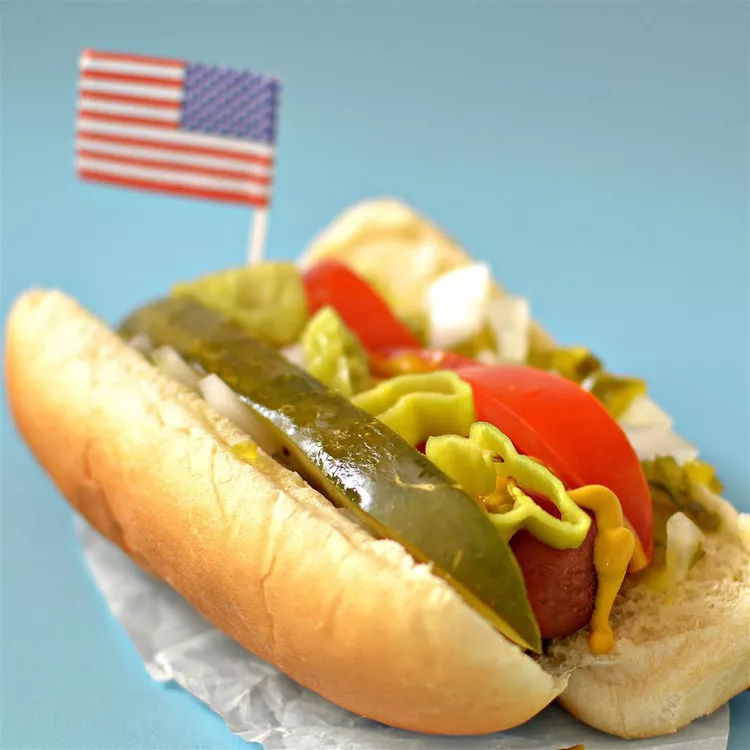

Homemade Chicago-Style Hotdogs

Ingredients
- All-beef hotdogs
- Poppy seed hot dog buns
- 1 tbsp of yellow mustard per hotdog
- 1 tbsp of sweet green pickle relish per hotdog
- 1 tbsp of chopped onion per hotdog
- Tomato Wedges
- Dill pickle spear
- Sport peppers
- Celery salt
Step-by-Step
- Boil water in high heat. Reduce to low heat and place hotdogs in the pot and cook until warmed through. Remove hotdogs from water and set aside.
- Place steamer basket into the pot and steam buns until warm.
- Place hotdogs in steamed bun and add the ingredients layered according to the order of ingredients.
- Serve and enjoy! It's tasty, I know.
To watch how it's made click here